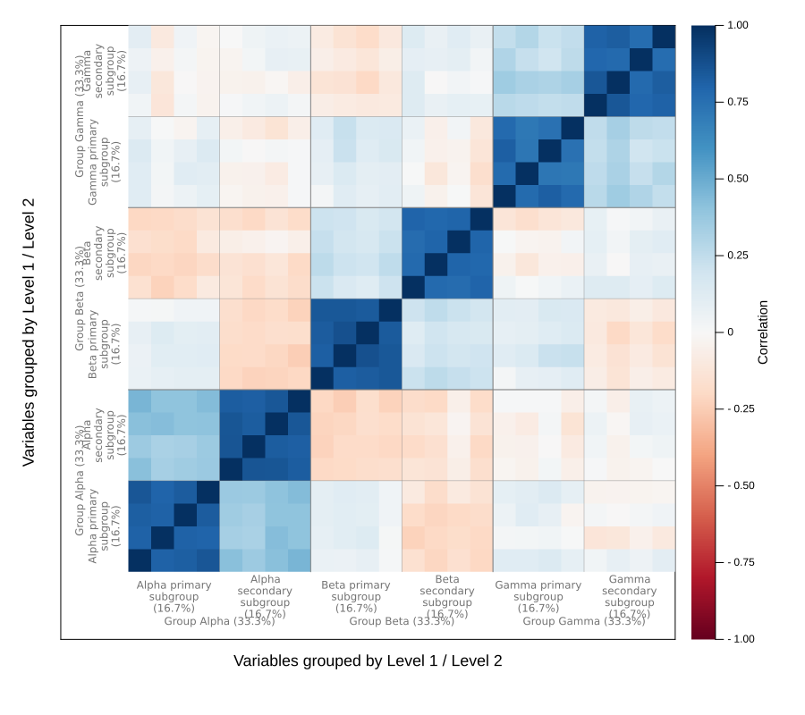
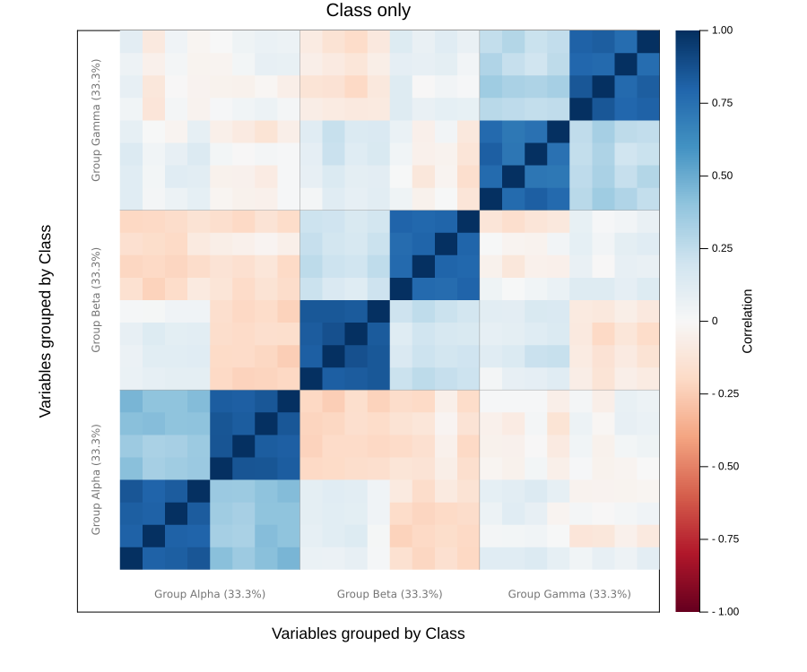
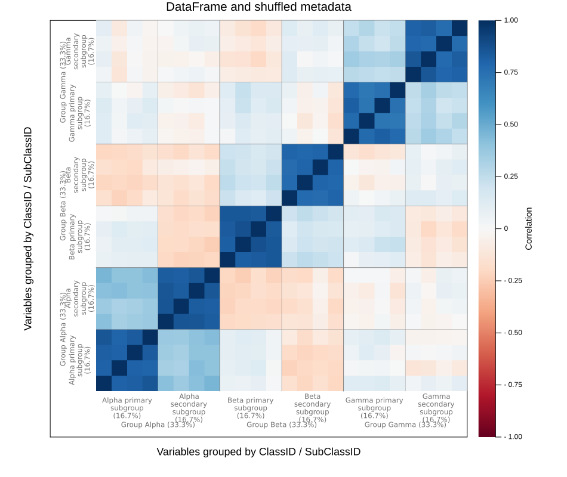
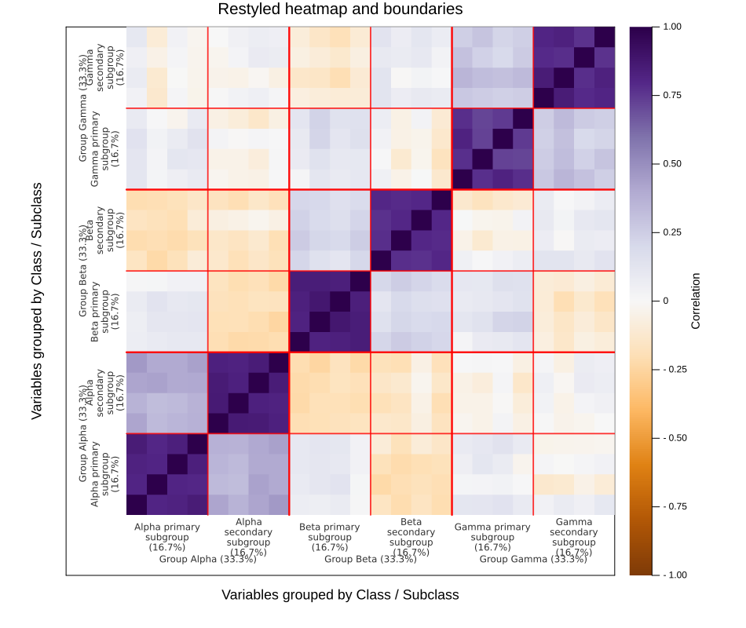
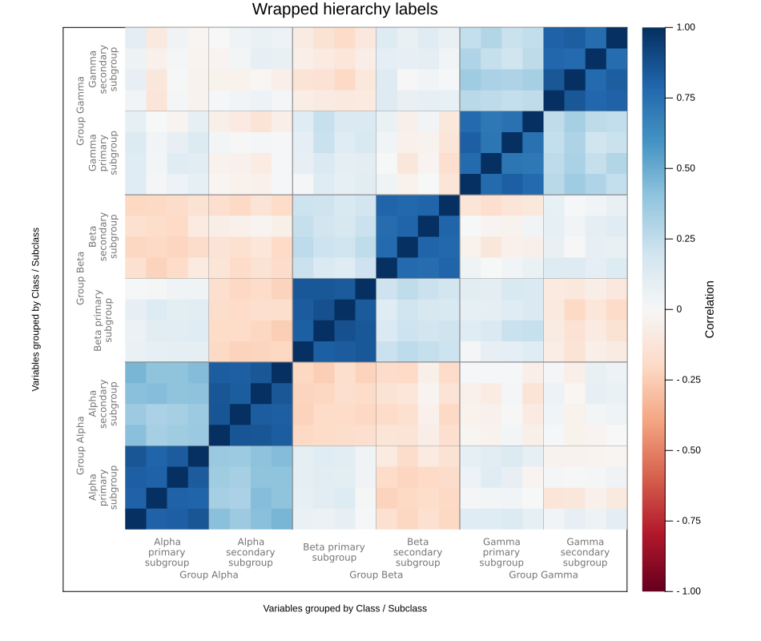
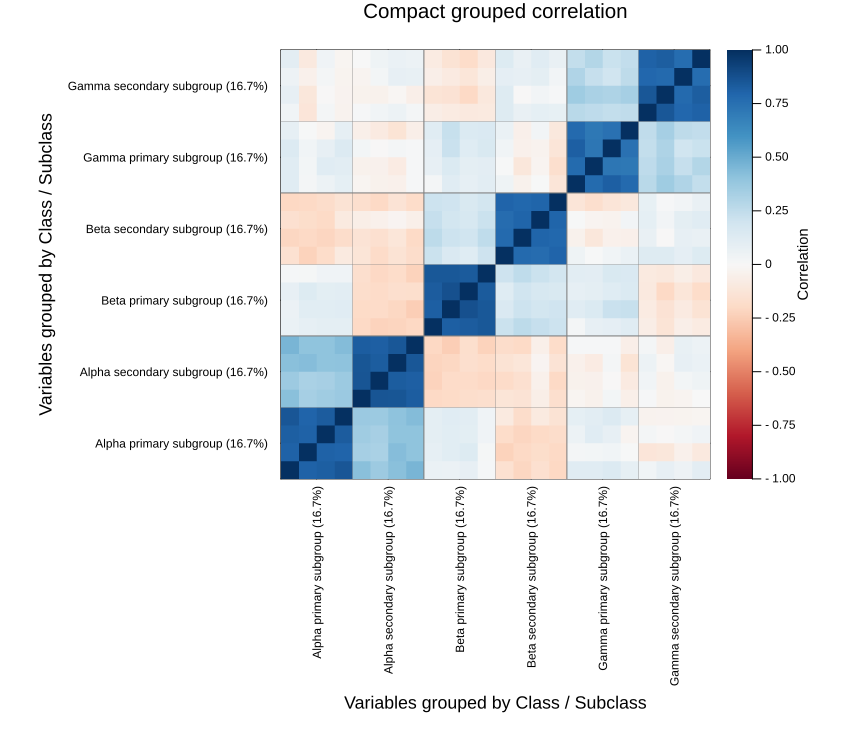

Grouped correlation plot
The grouped correlation plot draws the correlation between every pair of variables after arranging the variables through a classification hierarchy. Broad classes are ordered alphabetically, subclasses are ordered alphabetically inside their class, and variable names are ordered alphabetically inside their most specific group.
plot_grouped_correlation(data, variable_names, hierarchy; kwargs...)The data matrix has observations in rows and variables in columns. The hierarchy is supplied from broadest to most specific, so one vector gives a class-only plot, two vectors give class and subclass, and further vectors continue the same pattern. This makes a large correlation matrix readable without printing thousands of individual variable names.
Setup
The plot accepts either a matrix with separate classification vectors or a DataFrame with a metadata table. We load both routes here and use a StableRNG so the simulated tutorial data are reproducible across Julia sessions.
using BigRiverPlots
using Plots
using DataFrames
using StableRNGs
using Random
using Statistics
rng = StableRNG(20260729)StableRNGs.LehmerRNG(state=0x000000000000000000000000026a4ef3)Simulating grouped variables
We simulate 80 observations of 24 variables. Variables in the same class share a broad latent signal, while variables in the same subclass share an additional signal. The correlation heatmap should therefore contain smaller subclass blocks nested inside three broader class blocks.
The columns and their annotations are shuffled before plotting. This gives the helper something real to do: it must recover alphabetical class, subclass, and variable order rather than inheriting a convenient input order.
n = 80
p = 24
variable_names = ["variable_$(lpad(i, 2, "0"))" for i in 1:p]
classes = repeat(["Group Alpha", "Group Beta", "Group Gamma"], inner = 8)
subclasses = repeat([
"Alpha primary subgroup", "Alpha secondary subgroup",
"Beta primary subgroup", "Beta secondary subgroup",
"Gamma primary subgroup", "Gamma secondary subgroup",
], inner = 4)
class_signal = randn(rng, n, 3)
subclass_signal = randn(rng, n, 6)
X = 0.70 .* class_signal[:, repeat(1:3, inner = 8)] .+
0.90 .* subclass_signal[:, repeat(1:6, inner = 4)] .+
0.50 .* randn(rng, n, p)
shuffle_order = randperm(rng, p)
X = X[:, shuffle_order]
variable_names = variable_names[shuffle_order]
classes = classes[shuffle_order]
subclasses = subclasses[shuffle_order]
size(X)(80, 24)Checking the ordering
The public helper returns the ordered correlation matrix, the variable names in plotting order, the hierarchy level names, and the span occupied by every group. Looking at the first few ordered names confirms that the input shuffle does not control the figure.
Z, ordered_names, levelnames, spans = get_grouped_correlation_coords(
X,
variable_names,
[classes, subclasses];
levelnames = ["Class", "Subclass"],
)
ordered_table = DataFrame(
position = 1:p,
variable = ordered_names,
)
first(ordered_table, 8)| Row | position | variable |
|---|---|---|
| Int64 | String | |
| 1 | 1 | variable_01 |
| 2 | 2 | variable_02 |
| 3 | 3 | variable_03 |
| 4 | 4 | variable_04 |
| 5 | 5 | variable_05 |
| 6 | 6 | variable_06 |
| 7 | 7 | variable_07 |
| 8 | 8 | variable_08 |
The default plot
The default call fixes the correlation scale at (-1, 1), uses the diverging :RdBu palette, and displays a correlation colorbar. Classes occupy the outer label lane and subclasses sit immediately inside them. Percentages report the fraction of each axis owned by the corresponding group.
Boundary lines remain inside the heatmap. Broader class boundaries are slightly heavier than subclass boundaries.
plot_grouped_correlation(
X,
variable_names,
[classes, subclasses]
)
Modifying the plot
The recipe owns the hierarchical ordering and the placement of group labels and boundaries. Standard Plots attributes still control the title, heatmap palette, correlation limits, colorbar, margins, and canvas. Recipe-specific attributes control the boundary and hierarchy-label appearance.
Classes only
If subclasses are unavailable, pass one classification vector. The variables are ordered alphabetically within each class, and only the class label lane is drawn.
plot_grouped_correlation(
X,
variable_names,
[classes];
levelnames = ["Class"],
title = "Class only",
size = (900, 750),
)
Using a data table and metadata
For tabular data, the values in variable_col must match column names in the data table. group_cols lists the hierarchy from broadest to most specific. Other data columns, such as the sample identifier below, are ignored.
The metadata rows may arrive in any order. Identifier matching selects the data columns, and the same hierarchical sort determines the final plot.
data = DataFrame(X, Symbol.(variable_names))
insertcols!(data, 1, :SampleID => ["sample_$(i)" for i in 1:n])
metadata = DataFrame(
VariableID = variable_names,
ClassID = classes,
SubClassID = subclasses,
)
metadata = metadata[randperm(rng, p), :]
first(metadata, 6)| Row | VariableID | ClassID | SubClassID |
|---|---|---|---|
| String | String | String | |
| 1 | variable_05 | Group Alpha | Alpha secondary subgroup |
| 2 | variable_01 | Group Alpha | Alpha primary subgroup |
| 3 | variable_12 | Group Beta | Beta primary subgroup |
| 4 | variable_20 | Group Gamma | Gamma primary subgroup |
| 5 | variable_22 | Group Gamma | Gamma secondary subgroup |
| 6 | variable_02 | Group Alpha | Alpha primary subgroup |
plot_grouped_correlation(
data,
metadata;
variable_col = :VariableID,
group_cols = [:ClassID, :SubClassID],
title = "DataFrame and shuffled metadata",
size = (950, 800),
)
Palette, correlation limits, and boundaries
The standard Plots aliases c and clim control the heatmap and its colorbar. boundarycolor changes the internal class and subclass separators, while boundarywidth sets the base width. Broader boundaries retain a small additional weight so the hierarchy remains visible.
plot_grouped_correlation(
X,
variable_names,
[classes, subclasses];
levelnames = ["Class", "Subclass"],
c = :PuOr,
clim = (-1, 1),
boundarycolor = :red,
boundarywidth = 1.8,
hierarchycolor = "#303030",
title = "Restyled heatmap and boundaries",
size = (950, 800),
)
Long labels and percentages
Long group names wrap automatically according to the fraction of the axis they occupy. labelcapacity controls how much text fits on one line, while labelfontsize changes the label size. Set showfractions = false when the group names alone are enough.
plot_grouped_correlation(
X,
variable_names,
[classes, subclasses];
levelnames = ["Class", "Subclass"],
showfractions = false,
labelwrap = true,
labelcapacity = 75,
labelfontsize = 8,
title = "Wrapped hierarchy labels",
size = (950, 800),
)
A compact version
Set showlabels = false to remove the outer hierarchy lanes. The deepest groups then become ordinary ticks, while the class and subclass separators remain inside the heatmap. The colorbar is still shown by default.
plot_grouped_correlation(
X,
variable_names,
[classes, subclasses];
levelnames = ["Class", "Subclass"],
showlabels = false,
title = "Compact grouped correlation",
size = (850, 750),
)